Habit-Building Handbook
Make everyday learning a repeatable practice.
A structured learning journal that turns goals, routines and reflection into a repeatable practice for everyday learning.
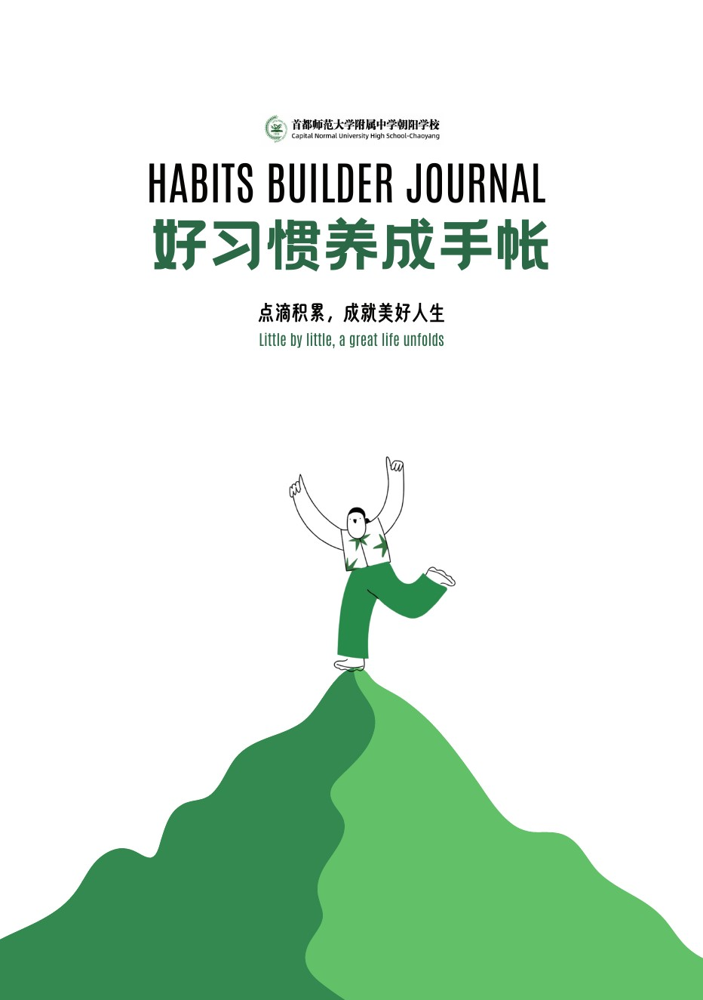
02 / GOAL SYSTEM
Make a goal specific enough to act on.
The handbook begins with a clear planning structure. SMART principles translate an ambition into a goal that can be named, measured, scheduled and reviewed, then connect it to a monthly learning plan.
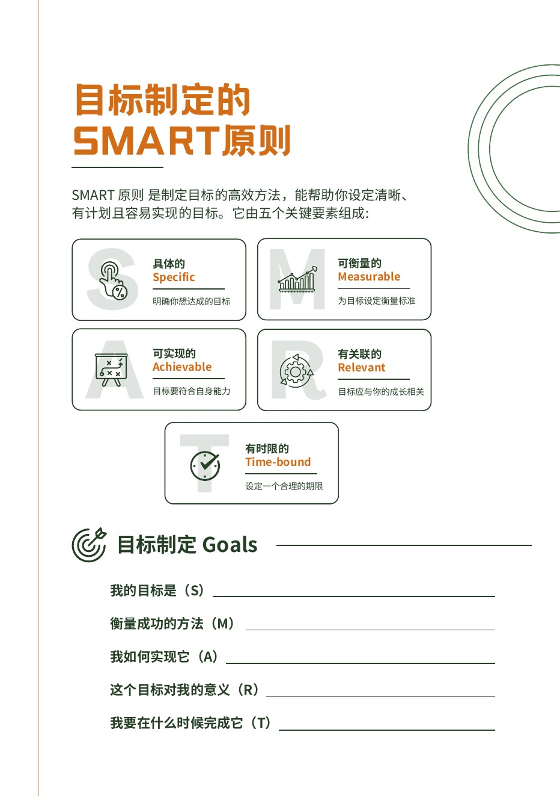
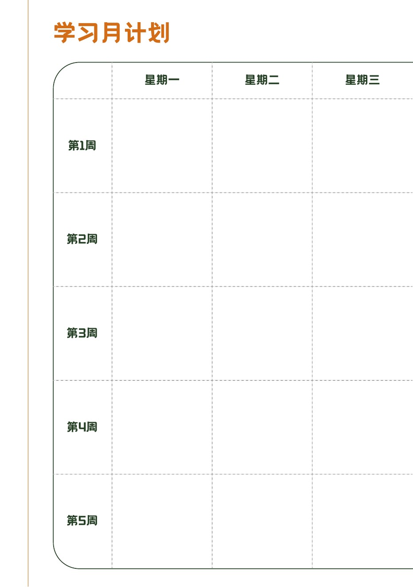
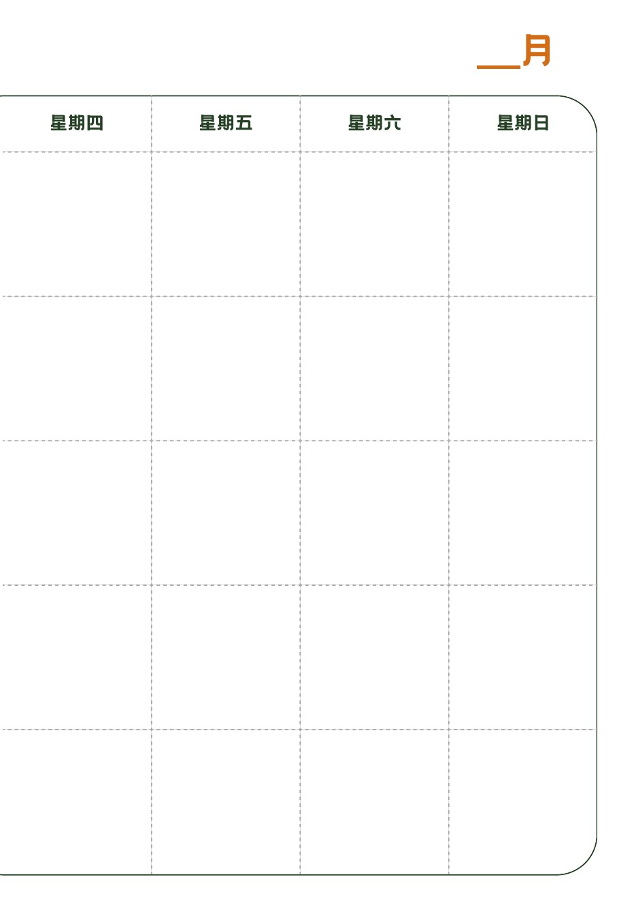
03 / DAILY PRACTICE
Turn routines into visible, repeatable records.
Reading, exercise, sleep and emotion are treated as parts of one learning rhythm. Calendar-based trackers make small actions visible without turning the handbook into a scorecard.
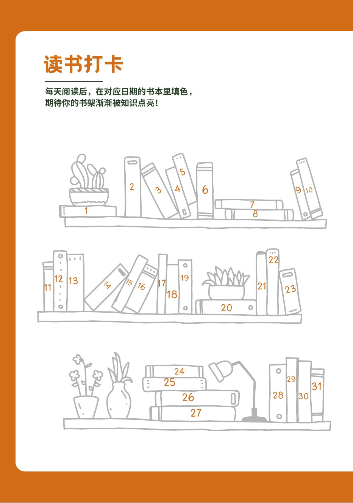
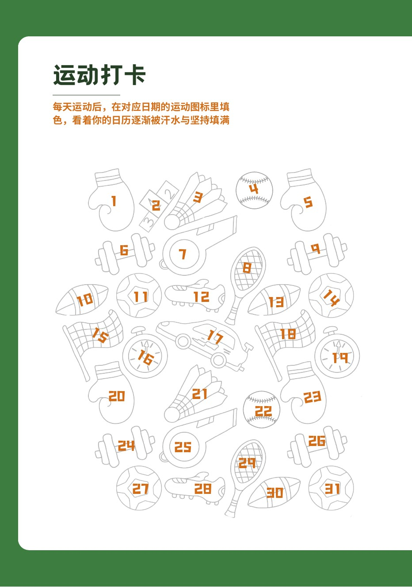
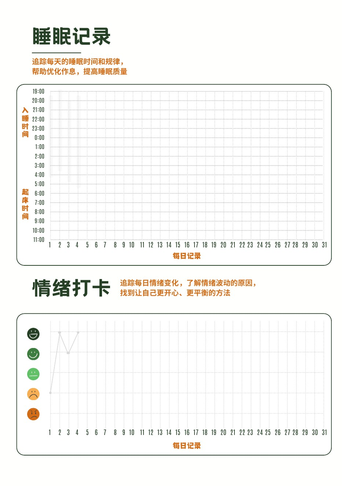
04 / REFLECTION
Close each cycle with evidence and reflection.
The monthly summaries move the handbook from recording to learning. They ask what happened, what mattered and what should change next, turning isolated entries into a personal feedback loop.
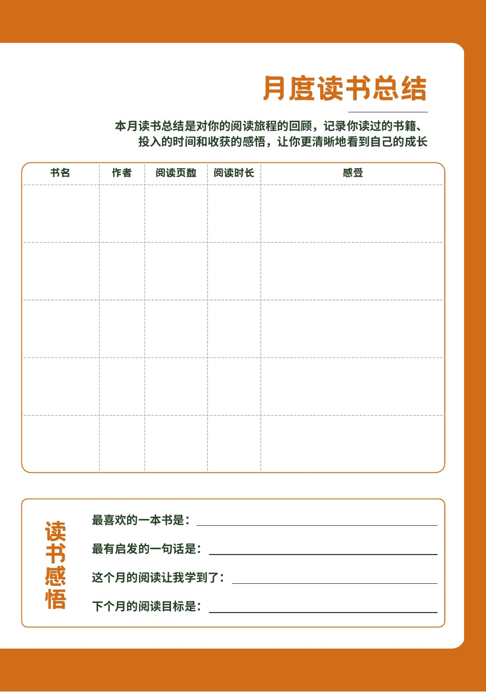
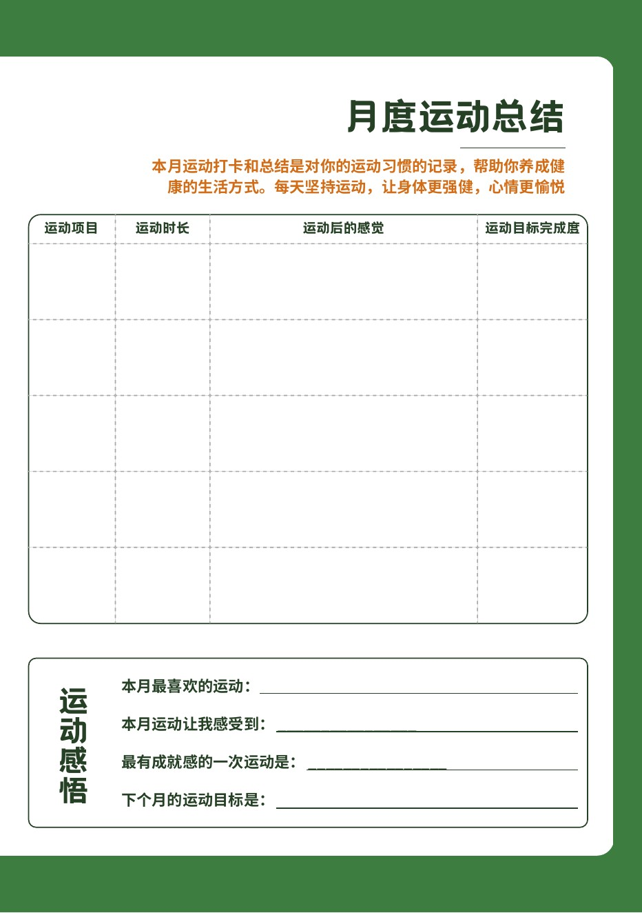
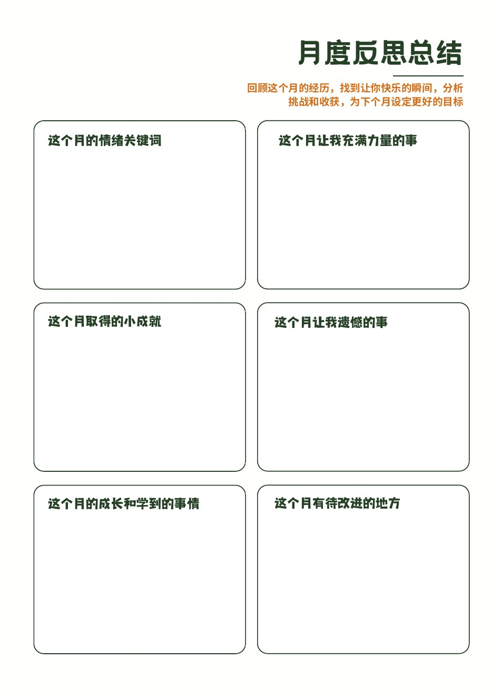
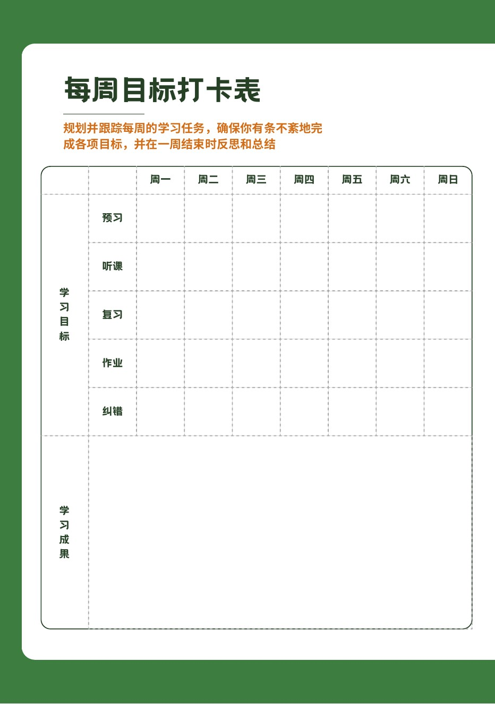
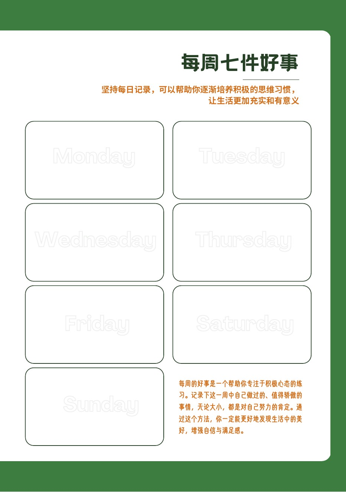
05 / SELF-ASSESSMENT
Make learning behaviour observable.
The final assessment rubric gives five study behaviours a shared language. Each behaviour is described across six levels, helping the learner identify a current position and choose a next step.
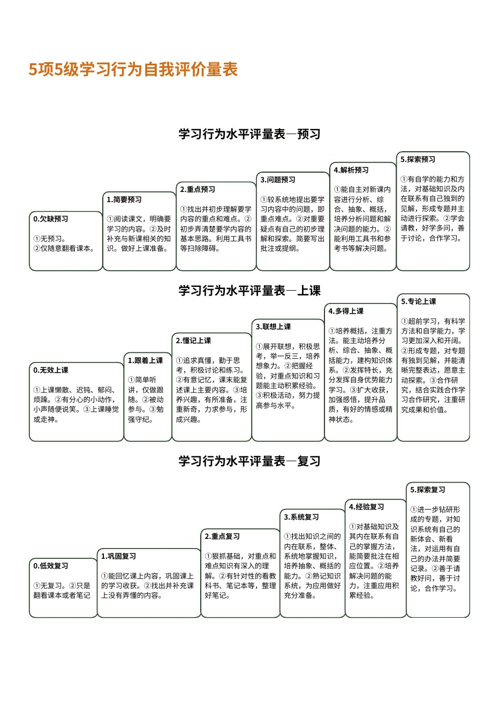
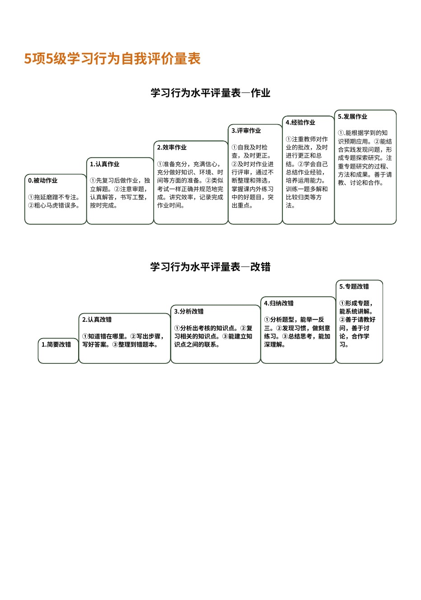